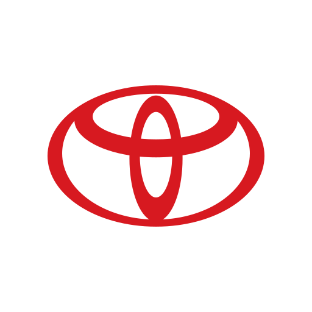
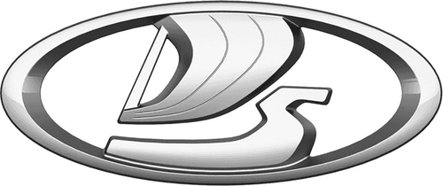
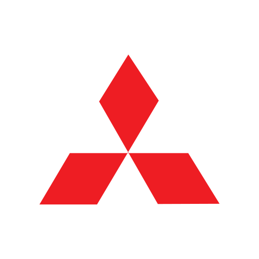
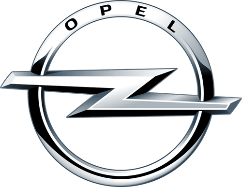
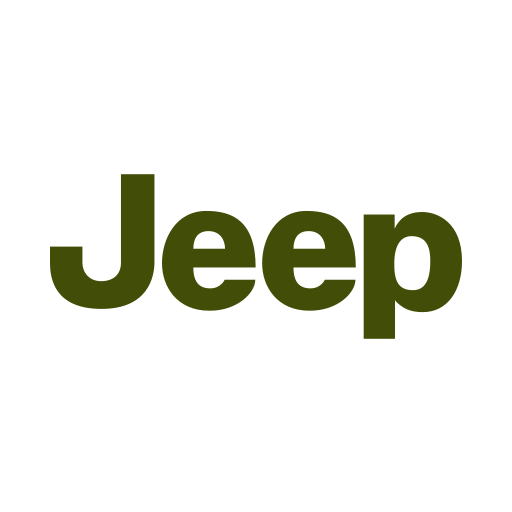
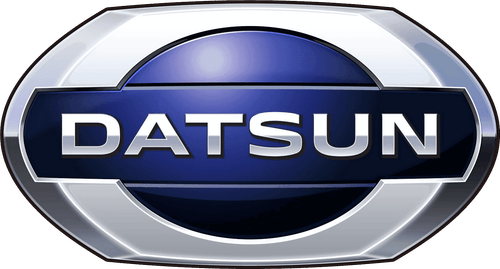
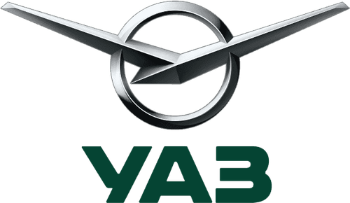
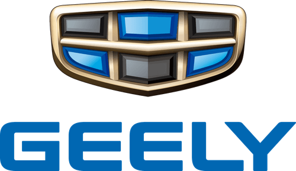

Диагностика перед ремонтом
Показываем реальное состояние авто, объясняем неисправность и разделяем работы на срочные и те, что можно отложить.
Диагностируем неисправность, объясняем причину понятным языком и согласовываем объём и стоимость работ до начала ремонта двигателя, ходовой, тормозов или подвески.

Почему выбирают нас
Показываем реальное состояние авто, объясняем неисправность и разделяем работы на срочные и те, что можно отложить.
Более 8 лет работы с двигателем, ходовой, подвеской и тормозами. Знаем типичные болячки популярных моделей.
Замена масла и фильтров — за 30–60 минут. Сроки ремонта называем заранее и стараемся не задерживать.
Даём гарантию на выполненные работы и установленные запчасти. Условия фиксируем в заказ-наряде.
Стоимость согласуем до начала ремонта. Вы понимаете, за что платите, ещё до подъёма машины на стенд.
Подъёмники, пресс и инструмент профессионального класса для точной и аккуратной работы.
Услуги автосервиса в Тамбове
Возвращаем управляемость и комфорт.
Находим причину стуков и увода автомобиля в сторону.
Подбираем и заливаем масло, проверяем уровень и состояние.
Профилактика и ремонт, сохраняем ресурс шин и плавность хода.
Восстанавливаем эффективное и безопасное торможение.
Считываем ошибки, определяем причину неисправности и согласовываем объём ремонта до начала работ.
Считываем ошибки электронных систем, определяем неисправности по датчикам и блокам управления. Объясняем причину понятным языком и рассчитываем стоимость ремонта до начала работ.
Как мы работаем
Оставляете заявку на сайте или звоните — коротко описываете проблему или нужную услугу.
Проверяем автомобиль и определяем точную причину неисправности.
Рассказываем, что именно не так и почему, понятным языком.
Что нужно сделать сейчас, а что можно отложить — решение за вами, до начала ремонта.
Выполняем согласованные работы и показываем результат при выдаче.
Акции
Дарим скидку 15% на работы в течение трёх дней до и после вашего дня рождения. Просто покажите документ.
ВоспользоватьсяПриезжайте на первую диагностику ходовой бесплатно. Получите отчёт о состоянии подвески без обязательств.
ЗаписатьсяАкции не суммируются между собой. Подробности и условия уточняйте у администратора при записи.
Наш сервис


С какими автомобилями работаем
Работаем с большинством массовых марок, представленных на дорогах Тамбова — от японских и корейских моделей до отечественных и китайских. Не нашли свою марку в списке — уточните по телефону, скорее всего, тоже возьмёмся.

Toyota
Lada (ВАЗ)
Mitsubishi
Opel
Jeep
Datsun
УАЗ
GeelyВопрос–ответ
Собрали, что чаще всего спрашивают перед записью. Не нашли ответ — позвоните, расскажем подробнее по вашей машине.
ПозвонитьВ среднем моторное масло меняют каждые 8 000–10 000 км или раз в год. При частых поездках по городу, коротких маршрутах и зимних запусках интервал лучше сокращать. Точный интервал зависит от марки и модели автомобиля, рекомендаций производителя и стиля езды — мы подбираем его индивидуально и сразу проверяем уровень и состояние масла.
Насторожить должны: загоревшийся «чек», падение мощности и провалы при разгоне, троение и вибрация на холостых, посторонние стуки, синий или чёрный дым из выхлопа, повышенный расход масла или топлива, перегрев. При любом из этих симптомов лучше сразу сделать компьютерную диагностику двигателя — мы считаем ошибки и найдём причину до того, как поломка станет дорогой.
Компьютерная диагностика двигателя включает считывание кодов ошибок из блока управления, проверку показаний датчиков в реальном времени, оценку работы системы зажигания, топливоподачи и впуска. При необходимости проверяем компрессию в цилиндрах и состояние свечей. По итогам вы получаете понятное объяснение неисправности и расчёт стоимости ремонта.
Плановое обслуживание (масло, фильтры, свечи) поддерживает двигатель в норме. Ремонт требуется, когда есть конкретная неисправность: стук, потеря компрессии, течь масла или антифриза, перегрев, ошибки по катушкам или форсункам. Точный объём работ мы определяем по результатам диагностики и всегда согласовываем с вами до начала ремонта.
Основные признаки: стуки и скрипы на неровностях, увод автомобиля в сторону, неравномерный износ шин, вибрация на руле, раскачка кузова после ям. При любом из этих симптомов стоит сделать диагностику ходовой. В Тамбове первая диагностика ходовой у нас — бесплатно.
Мы осматриваем и проверяем амортизаторы, пружины, сайлентблоки, шаровые опоры, рулевые наконечники, стойки и втулки стабилизатора, ступичные подшипники, ШРУСы и состояние тормозных элементов. По итогам вы получаете список того, что требует замены сейчас, а что можно отложить.
Проверять подвеску рекомендуется раз в 15 000–20 000 км или при появлении посторонних звуков — точный интервал зависит от модели автомобиля, рекомендаций производителя и состояния узлов. Расходные элементы (сайлентблоки, стойки стабилизатора) меняются по износу. Регулярный осмотр продлевает срок службы шин и сохраняет управляемость.
На многих современных Chery, Geely, Haval, Omoda и Changan установлен электронный стояночный тормоз (EPB) — вместо привычного троса разведением поршней в суппорте управляет электропривод. Если пытаться сдвинуть поршни вручную или монтировкой, «на глаз», без перевода привода в сервисный режим, можно легко сломать дорогостоящий моторчик суппорта. Мы используем диагностическое оборудование для безопасного электронного разведения поршней и последующей калибровки EPB после установки новых колодок. Автомобиль остаётся полностью исправным, электроника стояночного тормоза работает штатно, а стоимость такой замены получается до 60% ниже, чем у официального дилера.
Замена масла и фильтров — около 30–60 минут. Диагностика — 30–40 минут. Ремонт подвески и тормозов чаще занимает от 1 до 3 часов, ремонт двигателя и сложные случаи — дольше. Сроки зависят от автомобиля, объёма работ и наличия нужных деталей — точное время называем после диагностики, до начала работ.
Да, мы стараемся принять без записи, но в часы загрузки возможно ожидание. Чтобы приехать в удобное время и без очереди, лучше записаться заранее по телефону или через форму на сайте.
Да. Мы предоставляем гарантию на выполненные работы и установленные запчасти. Срок и условия гарантии зависят от вида работ и согласовываются при оформлении заказа-наряда.
Запись на ремонт
Оставьте заявку — перезвоним, уточним детали и подберём удобное время. Можно также позвонить напрямую.
Контакты